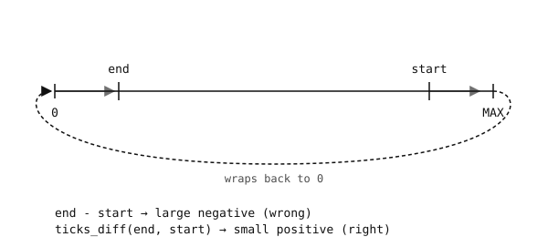

3.2. 計時¶
time 模組彙整了用於睡眠（將指令碼暫停一段已知時間）以及量測某件事耗時多久的函式。在微控制器上，這些並非可有可無的功能；它們正是指令碼用來掌握與外界互動節奏的方法 —— 一個接腳要維持高準位多久、取樣之間要等待多久、自按鈕上次被按下以來過了多久。
3.2.1. 睡眠¶
有三個睡眠函式會將指令碼阻塞所要求的時間：
time.sleep(s)—— 暫停s秒。接受浮點數，因此time.sleep(0.5)會等待半秒。time.sleep_ms(ms)—— 暫停ms毫秒。引數必須是整數。time.sleep_us(us)—— 暫停us微秒。
import time
print("now")
time.sleep_ms(500)
print("half a second later")
對於一般「稍等片刻」的需求請使用 time.sleep_ms()，只有在計時必須精準時才使用 time.sleep_us()。單純的 time.sleep() 也沒問題，但採用整數引數的變體可避免浮點數轉換，且在短時距時讀起來更自然。
睡眠是一種 阻塞 呼叫。在指令碼睡眠期間，它什麼都不做 —— 不讀取接腳、不服務 UART、不更新 LED。當阻塞正是你想要的行為時，就使用 sleep；不是時，請使用下方的非阻塞模式。
3.2.2. 讀取時鐘¶
若要量測一段程式碼耗時多久，請在前後各讀取一次時鐘：
time.ticks_ms()—— 目前以毫秒計的計時值。time.ticks_us()—— 同樣的值，但以微秒計。
import time
start = time.ticks_ms()
do_work()
elapsed = time.ticks_ms() - start
print("took", elapsed, "ms")
這在 大多數 時候都管用。計時計數器在經過一個很大但有限的計時數之後會翻轉（繞回到零），而跨越這個翻轉點的天真減法會產生一個錯得離譜的負數或正數。

計時計數器在到達整數上限時會繞回到零。跨越該翻轉點的單純減法是錯誤的。¶
3.2.3. ticks_diff¶
若要正確取得經過的計時數，即使跨越翻轉點也能正確，請使用 time.ticks_diff()：
import time
start = time.ticks_ms()
do_work()
elapsed = time.ticks_diff(time.ticks_ms(), start)
print("took", elapsed, "ms")
引數順序為 ticks_diff(later, earlier) —— 這個運算式讀作「later 在 earlier 之後有多遠」。結果是一個有號整數；正值表示 later 確實較晚，負值表示它在過去。此函式會在內部處理翻轉。
小訣竅
請始終把 time.ticks_ms() / time.ticks_us() 與 time.ticks_diff() 搭配使用。原始的減法在 大多數 時候是正確的；它出錯的時候正是指令碼已經執行了很長一段時間之時 —— 而那通常是除錯計時問題最糟糕的時機。
3.2.4. 非阻塞計時¶
微控制器指令碼通常有不只一件事要「同時」處理：讀取按鈕、閃爍 LED、輪詢感測器、服務 UART。sleep 不適合做這件事 —— 當一個 sleep 正在執行時，其他任務都會停擺。
標準的做法是為每個任務保留一個 截止時間，並在每次迴圈中檢查截止時間是否已過。採取行動的決定建立在 time.ticks_diff() 之上，而絕非 sleep：
import time
next_blink = time.ticks_ms()
next_poll = time.ticks_ms()
state = False
while True:
now = time.ticks_ms()
if time.ticks_diff(now, next_blink) >= 0:
state = not state
# update LED here
next_blink = time.ticks_add(next_blink, 500)
if time.ticks_diff(now, next_poll) >= 0:
# read sensor here
next_poll = time.ticks_add(next_poll, 100)
LED 每 500 ms 切換一次，感測器每 100 ms 輪詢一次，兩個任務互不阻塞。time.ticks_add() 會以一個已知的增量推進截止時間，且不會踩到翻轉的陷阱。
這種結構 —— 單一迴圈、數個定時任務、迴圈本體中沒有 sleep —— 在凡是有硬體程式碼的地方都會出現：開關的軟體去彈跳、馬達的時序控制、UART 讀取逾時。同樣的三個函式（time.ticks_ms()、time.ticks_diff()、time.ticks_add()）涵蓋了每一種情況。